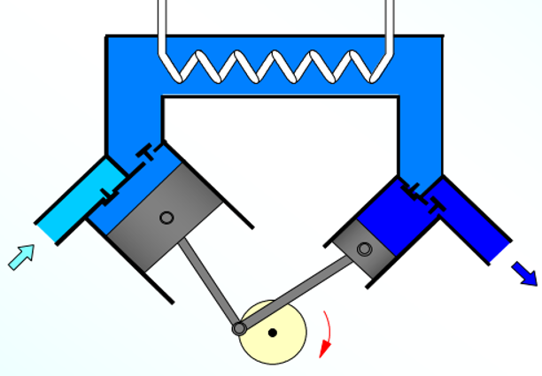
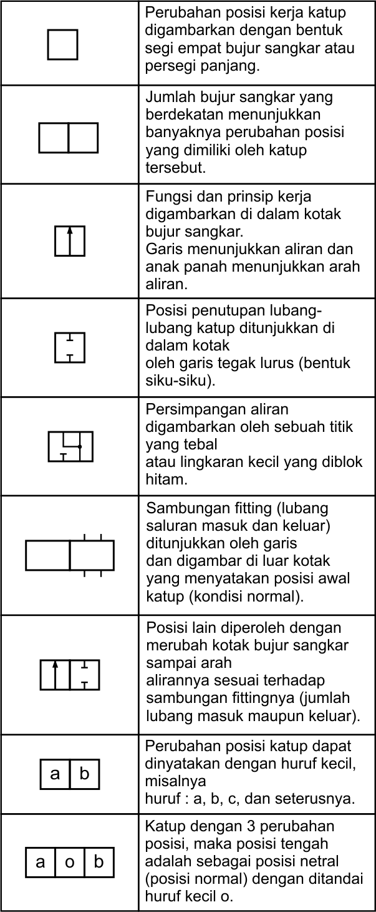

Kompresor
Kompresor torak (Piston)
Prinsip kerja dari kompresor torak dapat dilihat pada gambar berikut: Kompresor Diapragma
Prinsip kerja dari kompresor diapragma dapat dilihat pada gambar berikut:Kompresor Aliran Radial
Prinsip kerja dari kompresor aliran radial dapat dilihat pada gambar berikut:Kompresor Aliran Aksial
Prinsip kerja dari kompresor aliran aksial dapat dilihat pada gambar berikut:Kompresor Rotari Baling-Baling Luncur
Prinsip kerja dari kompresor rotari baling-baling luncur dapat dilihat pada gambar berikut:Kompresor Screw
Prinsip kerja dari kompresor screw dapat dilihat pada gambar berikut:Penerima
- Menyediakan tekanan udara yang konstan terhadap adanya konsumsi yang berfluktuasi dalam sistem pneumatik
- Sebagai persediaan dalam keadaan darurat ke dalam sistem
- Sebagai pendingin udara karena luas permukaan yang besar
- Memisahkan kandungan air dalam udara
Pengering
- Menghilangkan kandungan air pada udara terkompresi
- Menurunkan temperatur
Unit Servis
- Mencegah partikel debu masuk ke dalam sistem
- Memisahkan kondensasi akibat udara bertekanan
- Mengatur tekanan yang dibutuhkan sistem (konstan)
Katup kontrol
Katup kontrol atau katup pengarah adalah perlengkapan pneumatik yang menggunakan lubang-lubang saluran kecil yang akan dilewati oleh aliran angin, terutama untuk mulai (start) dan berhenti (stop) serta mengarahkan aliran angin tersebut.
Gambar simbol katup pengarah mempunyai ketentuan-ketentuan sebagai berikut:
Notasi dan Penomeran Katup
Notasi dan penomeran pada simbol katup kontrol mengikuti ketentuan sebagai berikut:
| Jenis Saluran | Tanda |
| Tenaga (pressure) | P (Pressure) atau 1 |
| Keluaran (Output) | A, B, C, atau 2, 4, 6, |
| Pembuangan (exhaust) | R, S, T, atau 3, 5, 7, |
| Kontrol atau sinyal (pemicu) | X, Y, Z, … atau 12 ; 14 ; 16 ; |
Jenis-jenis katup
Pada tabel berikut ditunjukkan jenis-jenis katup pada sistem penumaik.Berdasarkan cara pengoperasiannya, penggerak katup dibedakan menjadi empat yaitu manual control, mechanical control, pressure control, dan electrical control.
1. Manual Control
Penggerak katup ini dioperasikan oleh operator secara manual. Penggerak ini mempunyai beberapa jenis yaitu:
Contoh:
2. Mechanical Control
Penggerak katup ini dioperasikan dengan mekanik. Penggerak ini mempunyai beberapa jenis yaitu:
Contoh:
3. Pressure Control
Penggerak katup ini dioperasikan dengan tekanan angin. Penggerak ini mempunyai beberapa jenis yaitu:
Contoh:
4. Electrical Control
Penggerak katup ini dioperasikan dengan listrik. Penggerak ini mempunyai beberapa jenis yaitu:
Contoh:
Aktuator
Single Acting Cylinder
Pengantar
Pengertian Pneumatik
Istilah Pneumatik berasal dari kata “Pneuma” (Yunani Kuno) yang berarti tiupan atau angin. Definisi Pneumatik adalah salah satu cabang ilmu fisika yang mempelajari fenomena udara yang dimampatkan sehingga tekanan yang terjadi akan menghasilkan gaya sebagai penyebab gerak atau aktuasi pada aktuator. Sumber pembangkit pneumatik adalah udara bertekanan. Untuk menghasilkan udara bertekanan diperlukan Kompresor.
Karakteristik Positif Pneumatik
- Udara dapat dimampatkan
- Jumlahnya tak terbatas
- Penyimpanan mudah
- Tidak berbau dan berwarna
- Memenuhi semua ruang dengan sama rata (Selalu mencari tekanan yang lebih rendah)
- Laju aliran dapat dikontrol tekanan dan gayanya.
- Transportasi mudah (penyaluran).
- Aman terhadap beban lebih.
Karakteristik Negatif Pneumatik
- Biaya persiapannya tinggi
- Suara bising (udara buang)
- Mudah mengembun
- Mudah terjadi kebocoran
- Pada tekanan tinggi maka Temperatur juga tinggi (naik)
Blok Komponen Sistem Pneumatik
 Blok komponen sistem pneumatik terdiri dari:
Blok komponen sistem pneumatik terdiri dari:
- Kompresor
- Penerima
- Pengering
- Unit Servis
- Katup Kontrol
- Aktuator
BANTUAN
Menu bantuan ini adalah menu yang berisikan informasi untuk mengetahui fungsi tiap tombol pada media pembelajaran ini.
Berikut adalah penjelasannya:
Tombol ini terletak di pojok kiri atas, berfungsi sebagai tombol untuk kembali ke menu utama.
tombol ini terletak di bagaian pojok kiri bawah, berfungsi untuk kembali ke menu sebelumnya.
About App
Kami mengucapkan terimakasih kepada semua pihak yang telah membantu dan mendukung pengembangan media pembelajaran ini. Semoga media ini bermanfaat bagi pendidikan di sekolah baik bagi siswa, guru, lembaga pendidikan maupun untuk tujuan pengembangan.
Kami menyadari bahwa media ini masih jauh dari kesempurnaan sehingga kami membutuhkan kritik dan masukannya untuk pengembangan media selanjutnya.